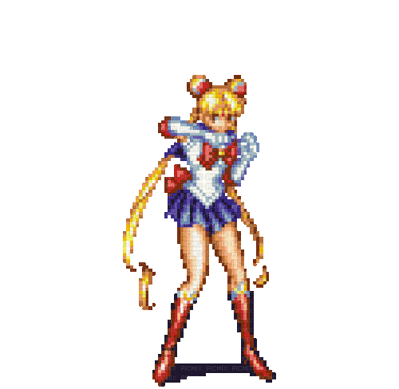
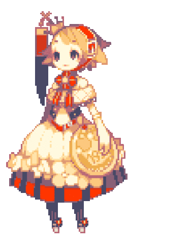

ANOTAÇÕES | Feitos para utilitários

- // Códigos de extenções do VS Code:
- // MS-CEINTL.vscode-language-pack-pt-BR - português
- // dzhavat.bracket-pair-toggler - Cor
- // dbaeumer.vscode-eslint - Suporte JavaScript
- // rifi2k.format-html-in-php - Suporte HTML
- // PKief.material-icon-theme - Tema dos icons
- // hakcorp.php-awesome-snippets - Snippets de PHP
- // bmewburn.vscode-intelephense-client - Suporte PHP
- // MS-CEINTL.vscode-language-pack-pt-BR - Linguagem PT BR
- // aaron-bond.better-comments - Better Comments
- // usernamehw.errorlens - Error Lens
- // GitHub.copilot - GitHub Copilot
- // GitHub.copilot-chat - GitHub Copilot Chat
- // xabikos.JavaScriptSnippets - JavaScript Snippets
- // adpyke.codesnap - CodeSnap
- // dracula-theme.theme-dracula - Dracula Theme
- // ms-vscode.live-server - Live Preview
- // miramac.vscode-exec-node - Node.js Exec
- // Endormi.2077-theme - Cyperpunk 2077 Theme
- // unthrottled.doki-theme - Doki Theme

- cmd > taskschd.msc > Biblioteca > Microsoft > Windows > Maintenence > ‘desativar’;
- Ajustar a aparência e o desempenho do windows;
- Aplicativos de segundo plano ‘desativar’;

- REGEDIT > HKEY_CURRENT_USER > System > GameConfigStore > (GameDVR_Enabled) > ‘0’;
- ... > HKEY_LOCAL_MACHINE > SOFTWARE > Microsoft > PolicyManager > default > ApplicationManagement > AllowGameDVR > (value) > ‘0’;
- ... > ... > ... > Microsoft > Windows Runtime > ActivatableClassid > Windows.Gaming.GameBar.PresenceServer.Internal.PresenceWriter > (Activation Type) > ‘0’;
- !! Pegar a permissão: Windows.Gaming.GameBarr... > Permissões > Adicionar > Verificar > Ok > ‘permitir’ || Avançados > Alterar > Verificar > Ok || Aplicar > Ok > Aplicar > Ok [(Activation Type) > ‘0’;
- Gerenciador de Dispositivos > Dispositivos de sistema > (Timer de eventos de alta precisão) > ‘Desabilitar Dispositivo’;

- //! Gerenciador de Tarefas > Serviços > (qualquer serviço + click direito) > Abrir Serviços;
- //! (começe de baixo para cima nos serviços)
- Windows Search;
- Telefonia;
- Spooler de Impressão;
- Serviços de Área de Trabalho Remoto;
- Serviço de Telefonia;
- Serviço de Relatórios de Erro do Windows;
- Serviço de Criptografia de Unidade de Disco Bitlocker;
- Serviço de Biometria do Windows;
- Registro Remoto;
- Cartão Inteligente;
- (executar arquivo processos, depois reiniciar)